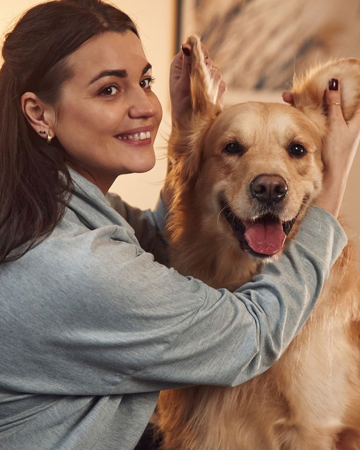
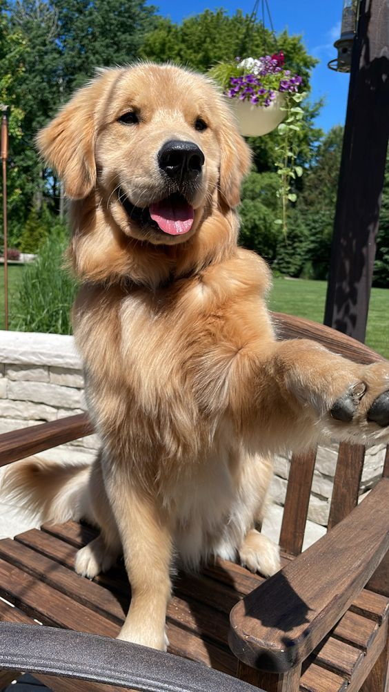
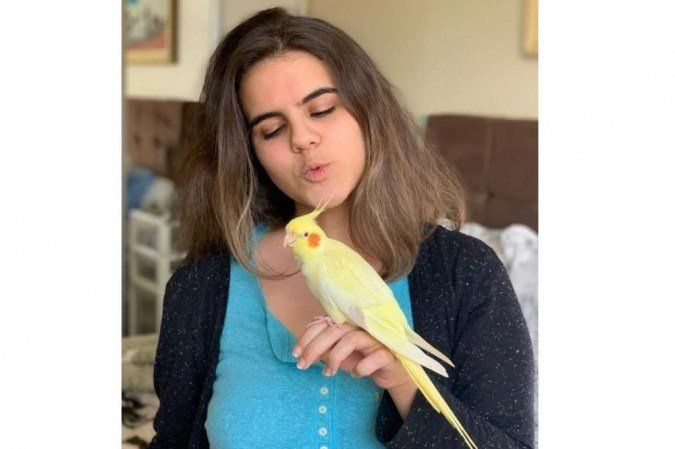
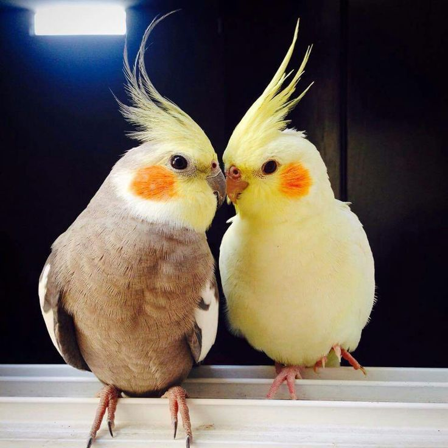
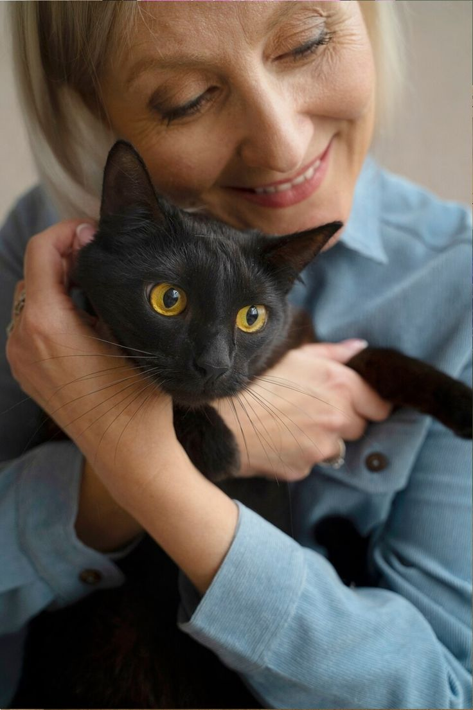
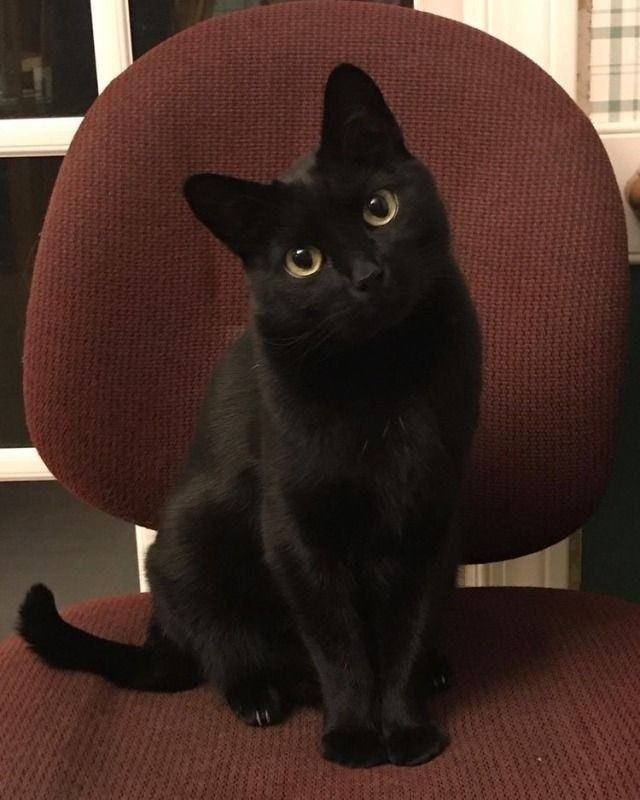

Redes sociais
Depoimentos dos nossos clientes

SOL
Como é bom ter meu amigo de volta!

Thor
Forte, saudavel e cheio de vigor

Sofia
Para quem pensa que nao da para encontyrar nossos amigos com pares de asas, a BCC Canids veio para ostrar o contrario

Tulipa
Familia reunida de novo, nota 1000 Canids

Creusa
Pensei que nunca mais ia ve lo, grata eternamente a equipe BCC canids

Kiara
Voltou tranquila e ate com o pelo mais sedoso, teve que fazer um tratamento pelos dias naa ruas, mas a equipe Canids entregou ela jovem e saudavel
Gostaria de doar?👀
Precisa de ajuda?
Contato
FAQ
Perguntas frequentes